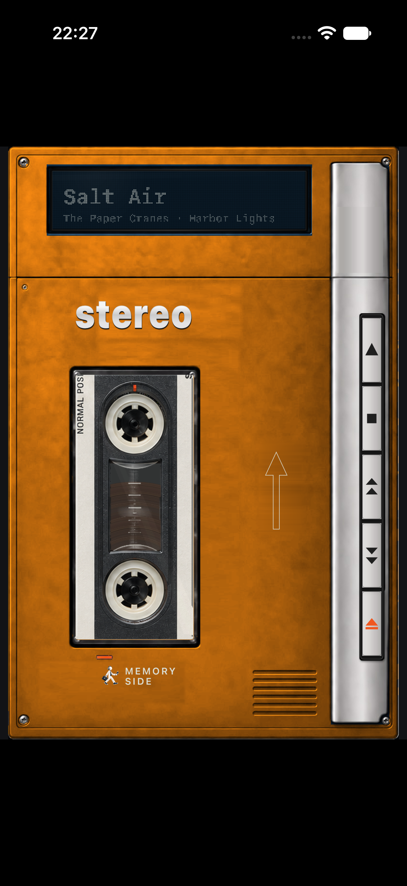
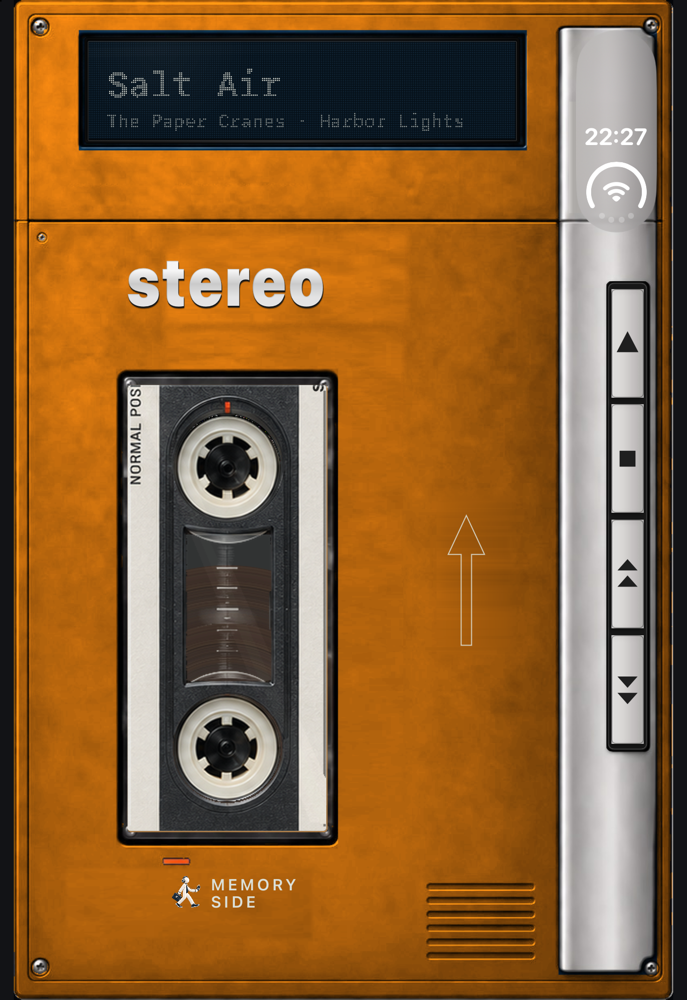
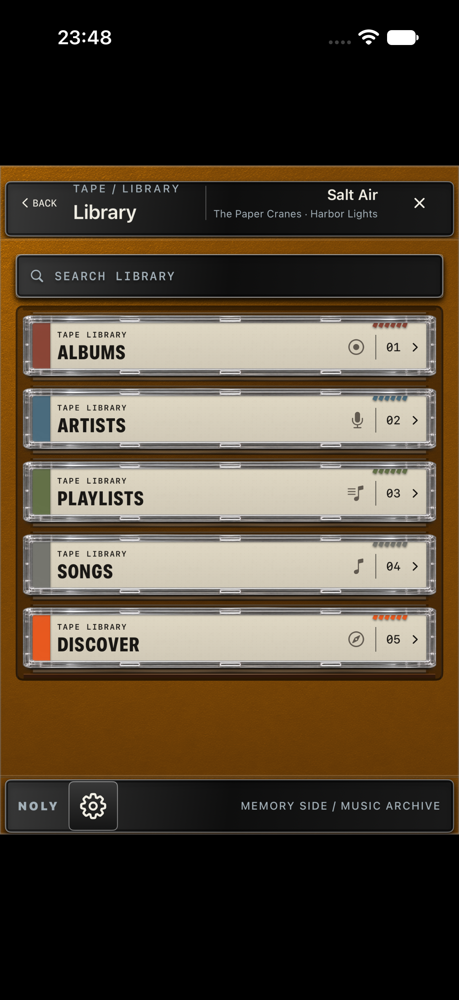
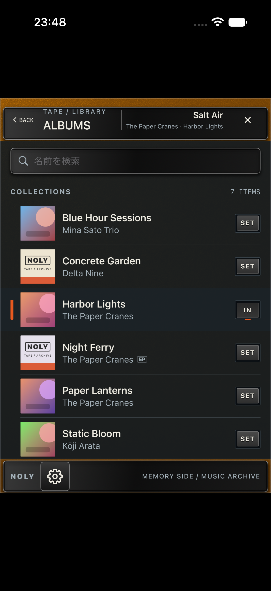
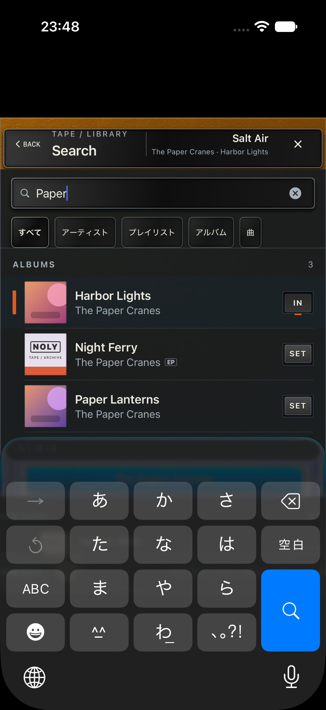
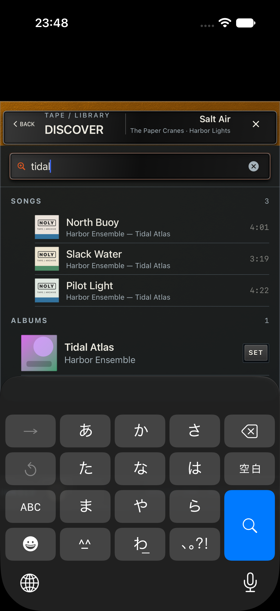
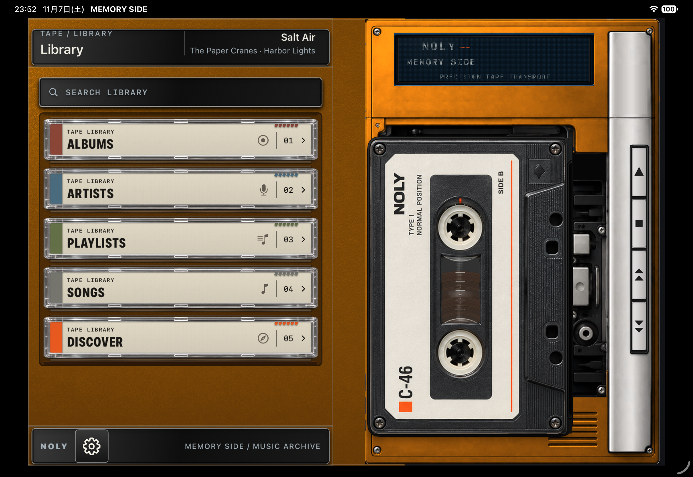
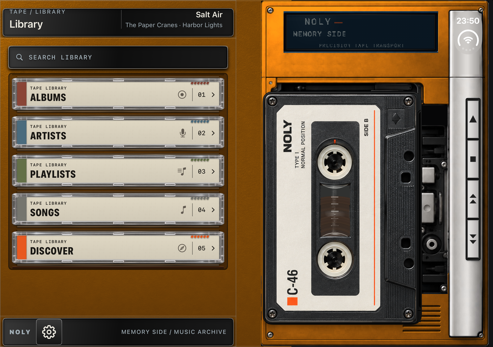
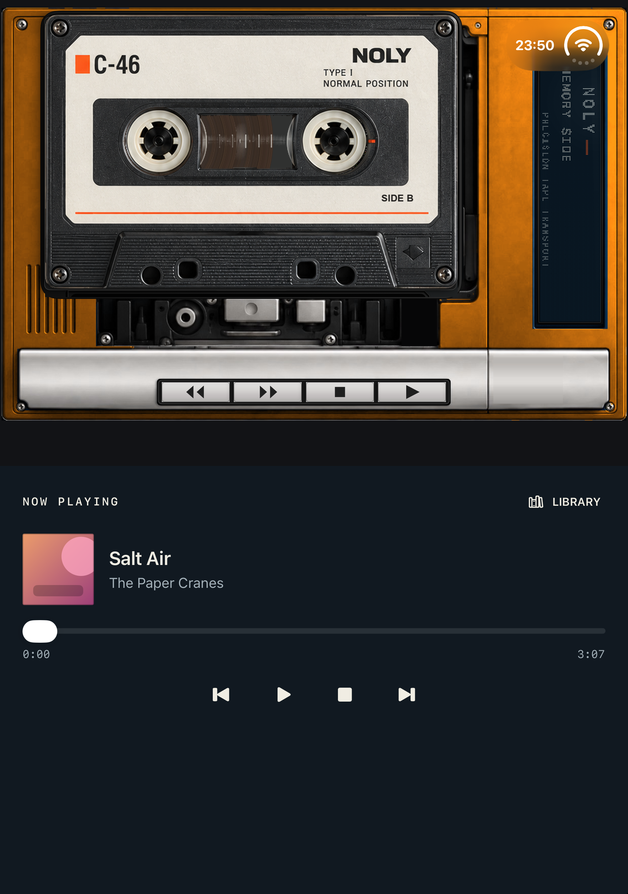

Library
自分のライブラリのアルバム、アーティスト、プレイリスト、曲を見られます。SONGS などの曲一覧から選ぶと、一覧の曲順で編集テープを作って再生します。

GETTING STARTED
初回は「メディアと Apple Music」へのアクセスを許可してください。
iPhoneではプレーヤーの窓または表示部分をタップします。iPad横向きとiPhone Duoの展開時は Library が表示されます。
ALBUMS、ARTISTS、PLAYLISTS、SONGS から探します。
アルバムやプレイリストの SET を押し、再生キーを押します。
LIBRARY
自分のライブラリのアルバム、アーティスト、プレイリスト、曲を見られます。SONGS などの曲一覧から選ぶと、一覧の曲順で編集テープを作って再生します。
自分のライブラリの中からアルバム、アーティスト、プレイリスト、曲を検索します。
Apple Music のカタログ全体から探します。カタログの再生には対応する Apple Music のサブスクリプションが必要です。地域や配信状況により再生できない項目もあります。
CONTROLS
SET は選んだアルバムやプレイリストをカセットとしてセットします。準備ができるまでお待ちください。
EJECT は通常の iPhone ではプレーヤーのふたを開閉します。開いた状態ではカセットを指で操作できます。右へ動かして取り出し、上下で別のカセットを選び、左へ動かしてセットします。
再生キーは再生・一時停止、停止キーは停止します。早送り・巻き戻しキーは短く押すと曲を移動し、長押しすると早送り・巻き戻しができます。
DEVICE GUIDE
縦向きのプレーヤーです。EJECT で Closed と Open を切り替え、窓や表示部分をタップして Library を開きます。
縦向きでは Closed プレーヤー、横向きでは Library とプレーヤーを並べて表示します。
Closed は外側画面のプレーヤー。Open は展開した内側画面で Library とプレーヤーを表示します。
Tabletop では上側に鑑賞用のプレーヤー、下側に再生操作と Library を表示します。開閉や姿勢に応じて画面が切り替わります。通常の iPhone と異なり、端末の姿勢に合わせた表示を使えます。

SCREEN GUIDE
画像はSimulator上のアプリを撮影したものです。楽曲にはサンプルデータを使用しています。







MAKE IT YOURS
端末の「設定」アプリから、見た目や操作音を変更できます。
デフォルト、ブラック、アイボリー、シルバー、オレンジの5色から選べます。
38種類のデザインを用意しています。ランダムに選ぶか、ランダムをオフにして手動で選べます。
背景の表示や操作音を設定できます。iPhone Duo では背景設定は適用されず、専用の表示を使います。操作音は端末の「着信音と通知」の音量や消音モードにも影響されます。
HELP
アクセス許可、通信状態、Apple Music での再生可否を確認してください。カタログの再生には対応するサブスクリプションが必要です。
SEARCH LIBRARY は自分のライブラリを検索します。Apple Music 全体から探すには DISCOVER を使ってください。
アプリの Sound Effects 設定と、端末の「着信音と通知」の音量、消音モードを確認してください。
アプリのバージョン、端末、OS、発生した操作を添えてお知らせください。GitHub Issues は公開されるため、個人情報や機密情報は投稿しないでください。